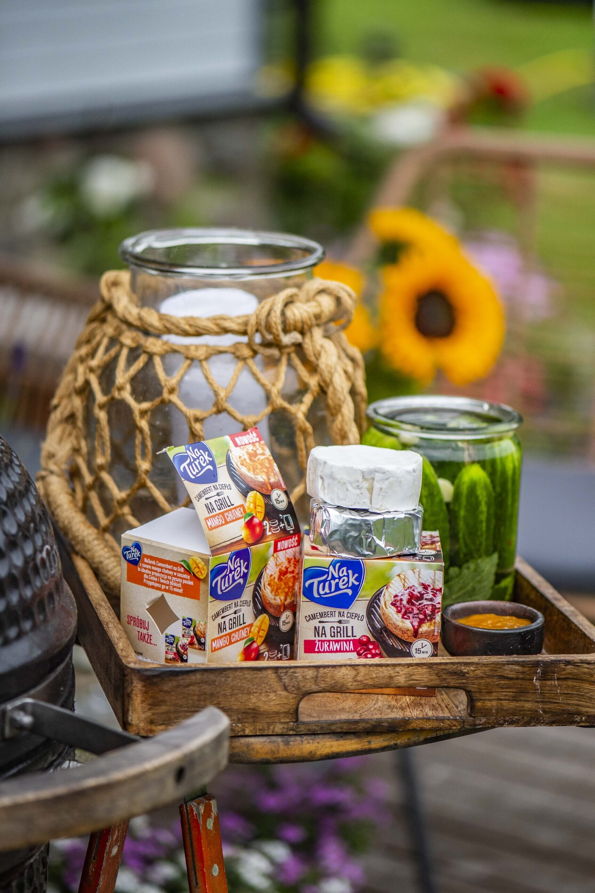
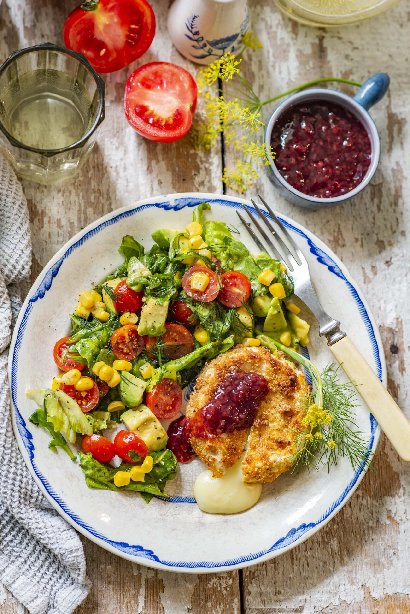
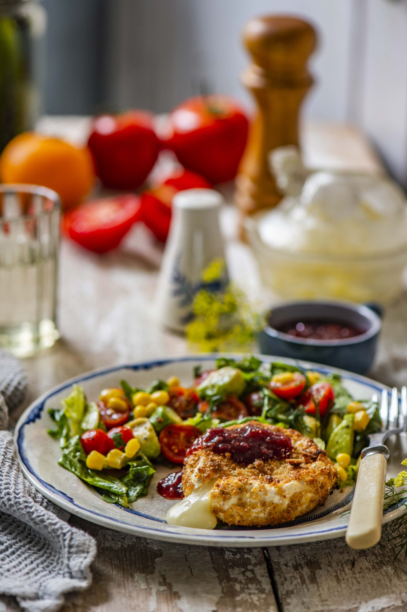

Krõbedas paneeringus camembert juust värske salatiga
Koostisosa |
Kogus |
| NaTurek camembert juustu ketast jõhvikaga |
2 tk |
| Jahu |
2 sl |
| Muna |
1 tk |
| Riivsai |
1 dl |
| Või |
10-20 g |
| Salatiroheline |
100 g |
| Avokaado |
1 tk |
| Kirsstomatid |
100 g |
| Konserveeritud mais |
3-4 sl |
| Oliiviõli |
2sl |
| Sidrunimahl |
1 sl |
| Soola ja pipart |
|
Valmistmine
- Laota jahu ja riivsai taldrikule ja klopi kausis muna lahti
- Püherda juustuketast esmalt jahu sees, siis kasta muna sisse ja siis riivsaia sisse
- Kuumuta pannil või ja prae paneeritud juustukettaid või sees mõlemalt poolt
- Salati valmistamiseks tõsta väiksemaks rebitud salatilehed, tükeldatud avokaado, poolitatud kirsstomatid ja mais kaussi
- Sega omavahel sidrunimahl ja oliiviõli ning kalla salatile. Maitsesta soola ja pipraga.
- Tõsta salat taldrikutele. Lisa sinna juurde krõbedaks praetud camembert, millele pigista pakendist veidi jõhvikakastet.
- Lisainfot vaata siit


